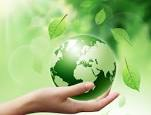
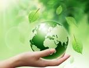

OUR ENVIRONMENT...

The natural environment encompasses all living and non-living things occurring naturally, meaning in this case not artificial. The term is most often applied to the Earth or some parts of Earth. This environment encompasses the interaction of all living species, climate, weather and natural resources that affect human survival and economic activity.The concept of the natural environment can be distinguished as components:
In contrast to the natural environment is the built environment. In such areas where man has fundamentally transformed landscapes such as urban settings and agricultural land conversion, the natural environment is greatly modified into a simplified human environment. Even acts which seem less extreme, such as building a mud hut or a photovoltaic system in the desert, the modified environment becomes an artificial one. Though many animals build things to provide a better environment for themselves, they are not human, hence beaver dams, and the works of Mound-building termites, are thought of as natural.
People seldom find absolutely natural environments on Earth, and naturalness usually varies in a continuum, from 100% natural in one extreme to 0% natural in the other. More precisely, we can consider the different aspects or components of an environment, and see that their degree of naturalness is not uniform. If, for instance, in an agricultural field, the mineralogic composition and the structure of its soil are similar to those of an undisturbed forest soil, but the structure is quite different.
 

A person's environment is the events and culture that the person lived in. A person's beliefs and actions depend on his environment. For example, Thomas Jefferson and Julius Caesar owned slaves. Modern people mostly think it is wrong to own slaves. But in Jefferson's and Caesar's environments slavery was normal. So, their actions did not look as wrong in their societies.Its simple defination is :Interaction between man and environment in past.
Some people call themselves environmentalists. They think we must protect the natural environment, to keep it safe. Things in the natural environment that we value are called natural resources. For example; fish, sunlight, and forests. These are renewable resources because they come back naturally when we use them. Non-renewable resources are important things in the environment that are limited for example, ores and fossil fuels. Some things in the natural environment can kill people, such as lightning.

Earth is the third planet from the Sun and the only astronomical object known to harbor life. According to radiometric dating and other sources of evidence, Earth formed over 4.5 billion years ago.[24][25][26] Earth's gravity interacts with other objects in space, especially the Sun and the Moon, Earth's only natural satellite. Earth revolves around the Sun in 365.26 days, a period known as an Earth year. During this time, Earth rotates about its axis about 366.26 times.
Earth's axis of rotation is tilted with respect to its orbital plane, producing seasons on Earth.[27] The gravitational interaction between Earth and the Moon causes ocean tides, stabilizes Earth's orientation on its axis, and gradually slows its rotation.[28] Earth is the densest planet in the Solar System and the largest of the four terrestrial planets